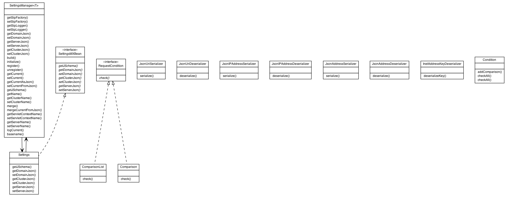

|
||||||||||
| PREV PACKAGE NEXT PACKAGE | FRAMES NO FRAMES | |||||||||

See:
Description
| Interface Summary | |
|---|---|
| RequestCondition | |
| SettingsMXBean | |
Use the SettingsManager Generics class to dynamically read and write configuration files.
|
||||||||||
| PREV PACKAGE NEXT PACKAGE | FRAMES NO FRAMES | |||||||||